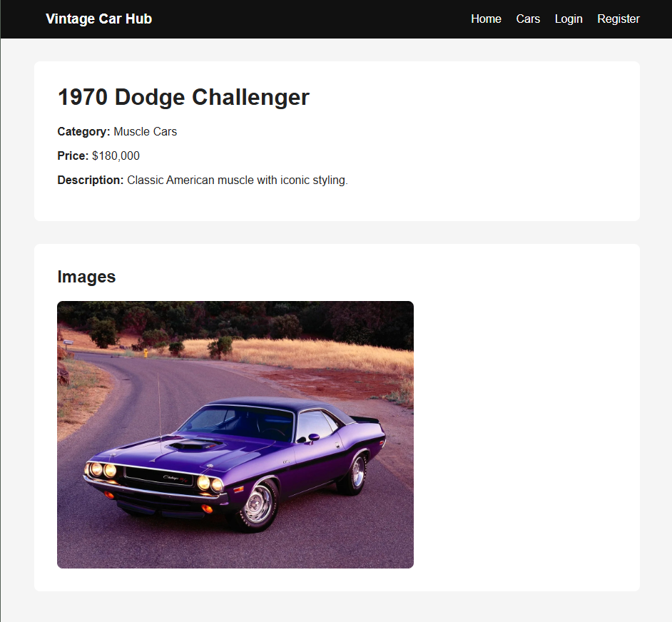

Full Stack Project
Vintage Car Showcase & Restoration Hub
A full-stack web application currently in development where users can browse vintage cars, create restoration projects, and track progress through multiple stages of a restoration workflow.
Node.js · Express · PostgreSQL · EJS · MVC
- Built using a server-rendered architecture with Express and EJS
- Implementing session-based authentication and role-based permissions
- Designing a relational PostgreSQL database for users, cars, and restoration projects
- Currently expanding admin tools and workflow features